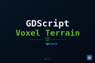

NOT THE CHUNKSTREAMER LIFECYCLE TEST. Do not send this export for the lifecycle investigation.
Same mobile Web runtime. Compares real terrain assets with trivial controls through synchronous and threaded ResourceLoader paths.
Lifecycle data comes only from the regular streaming Integration Preview. Its export filename starts with streaming-experiment-.